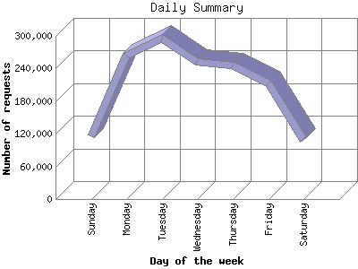

The Daily Summary identifies the level of activity as a total for each day of the week. This summary also compares the level of activity on weekdays and weekends as a total for the report time frame.

| Day of the week | Number of requests | Number of page requests | |
|---|---|---|---|
| 1. | Sunday | 116,007 | 2,896 |
| 2. | Monday | 263,563 | 5,118 |
| 3. | Tuesday | 294,253 | 6,238 |
| 4. | Wednesday | 252,849 | 4,999 |
| 5. | Thursday | 246,243 | 4,747 |
| 6. | Friday | 212,655 | 4,136 |
| 7. | Saturday | 108,672 | 3,275 |
| Total Weekdays | 1,269,563 | 25,238 | |
| Total Weekend | 224,679 | 6,171 | |
This report was generated on June 15, 2011 14:02.
Report time frame July 28, 2010 00:18 to June 15, 2011 00:01.
| Web statistics report produced by: analog 6.0 / Report Magic 2.21 |